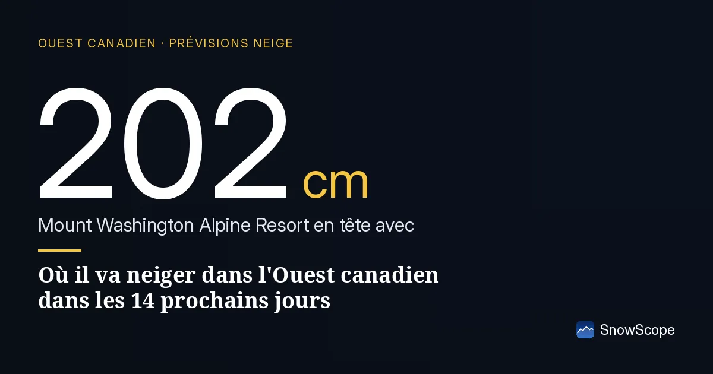
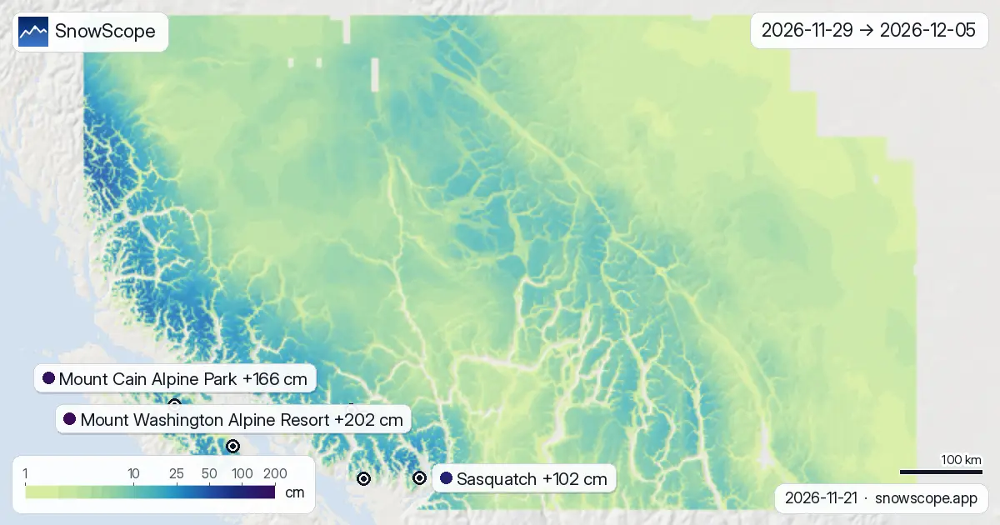

Où il va neiger dans l'Ouest canadien dans les 14 prochains jours : Mount Washington Alpine Resort en tête avec 202 cm
Nos cartes à deux semaines montrent où la neige fraîche devrait tomber dans l'Ouest canadien entre le 22 novembre et le 5 décembre, d'après les deux prévisions mondiaux qui portent à deux semaines, ECMWF et GFS : nous prenons le milieu des deux et donnons toujours leur fourchette. Le plus gros lot va à Mount Washington Alpine Resort : 202 cm ou presque sur le haut du domaine, 109 cm–296 cm selon la prévision, puis Mount Cain Alpine Park avec 166 cm. Confiance : bonne pour la tendance, plus faible pour chaque chiffre pris seul.
Consultez les prévisions neige en temps réel pour Mount Washington Alpine Resort sur l'application SnowScopeHauteurs de neige, alertes poudreuse et carte 3D, gratuitement.
Station par station, les 14 prochains jours
Mount Washington Alpine Resort (Canada) : environ 202 cm en 14 jours (109 cm–296 cm selon la prévision), 178 cm la première semaine et 24 cm la seconde. Notez le 24 novembre : c'est la plus grosse journée, avec 64 cm, sur 8 jours à 5 cm ou plus.
À Mount Cain Alpine Park (Canada), les deux semaines totalisent environ 166 cm (83 cm–249 cm selon la prévision) : 139 cm à la fin de la première semaine, puis 27 cm de plus. Notez le 24 novembre : c'est la plus grosse journée, avec 48 cm, sur 7 jours à 5 cm ou plus.
Sasquatch (Canada) : environ 102 cm en 14 jours (56 cm–149 cm selon la prévision), 79 cm la première semaine et 23 cm la seconde. Le jour le plus neigeux est le 24 novembre avec 22 cm ; 7 jours apportent 5 cm ou plus.
À Whistler Blackcomb (Canada), les deux semaines totalisent environ 102 cm (65 cm–140 cm selon la prévision) : 91 cm à la fin de la première semaine, puis 11 cm de plus. Le jour le plus neigeux est le 26 novembre avec 29 cm ; 5 jours apportent 5 cm ou plus.
À Mt Seymour (Canada), les deux semaines totalisent environ 86 cm (45 cm–128 cm selon la prévision) : 68 cm à la fin de la première semaine, puis 18 cm de plus. Notez le 24 novembre : c'est la plus grosse journée, avec 26 cm, sur 5 jours à 5 cm ou plus.
Ski Callaghan (Canada) : environ 73 cm en 14 jours (45 cm–101 cm selon la prévision), 61 cm la première semaine et 11 cm la seconde. Le jour le plus neigeux est le 26 novembre avec 19 cm ; 4 jours apportent 5 cm ou plus.
| Station | Hauteur de neige | Neige fraîche, 72 h | Attendu, jours suivants | Sommet |
|---|---|---|---|---|
| Mount Washington Alpine Resort | 95 cm | 1 cm | 76 cm | 1 569 m |
| Mount Cain Alpine Park | 93 cm | 0 cm | 57 cm | 1 616 m |
| Sasquatch | 13 cm | 0 cm | 25 cm | 1 316 m |
| Whistler Blackcomb | 150 cm | 0 cm | 33 cm | 2 259 m |
| Mt Seymour | 18 cm | 0 cm | 10 cm | 1 255 m |
| Ski Callaghan | 15 cm | 0 cm | 25 cm | 998 m |

La neige encore à venir
Jusqu'à 76 cm de neige fraîche sont prévus à Mount Washington Alpine Resort dans les prochains jours.
Les prévisions bougent : le moment est souvent plus fiable que les quantités, revérifiez deux jours avant de partir.
Vers 1 325 m, Mount Washington Alpine Resort a 6 cm aujourd'hui ; un 21 novembre normal y compte 43 cm.
Un hiver sur dix seulement dépasse 97 cm à cette date.
Il y a une semaine, le même endroit avait 4 cm.
Les hivers passés, la meilleure neige à Mount Washington Alpine Resort arrivait d'habitude début janvier / fin février.

Première semaine contre seconde
Additionnez la région et 65 % de la neige de la quinzaine est déjà tombée le 28 novembre ; ce que les cartes montrent du 29 novembre au 5 décembre est le reste.
Les précoces : Mount Washington Alpine Resort, Mount Cain Alpine Park, Sasquatch, Whistler Blackcomb, Mt Seymour et Ski Callaghan voient l'essentiel de leur neige avant la fin de la première semaine.
Sur la carte, environ 102 272 km² de terrain de montagne reçoivent 20 cm ou plus sur les deux semaines, et 43 395 km² reçoivent 50 cm ou plus.

Neige fraîche par altitude
Les mêmes deux semaines par altitude, sur toutes les montagnes de la région (chaque kilomètre carré de terrain, pas seulement les stations) : entre 1 000 m et 1 500 m : typiquement 8 cm, le quart le plus enneigé de cette tranche 15 cm ou plus; entre 1 500 m et 2 000 m : typiquement 15 cm, le quart le plus enneigé de cette tranche 23 cm ou plus; entre 2 000 m et 2 500 m : typiquement 12 cm, le quart le plus enneigé de cette tranche 22 cm ou plus; entre 2 500 m et 3 000 m : typiquement 9 cm, le quart le plus enneigé de cette tranche 16 cm ou plus; entre 3 000 m et 4 500 m : typiquement 10 cm, le quart le plus enneigé de cette tranche 15 cm ou plus.
Les jours à surveiller
Les journées de neige sur la région, sur les 51 stations de notre liste : mardi 24 novembre (8 stations sur 51 à 5 cm ou plus, jusqu'à 64 cm à Mount Washington Alpine Resort), mercredi 25 novembre (8 stations sur 51 à 5 cm ou plus, jusqu'à 38 cm à Mount Washington Alpine Resort), jeudi 26 novembre (18 stations sur 51 à 5 cm ou plus, jusqu'à 37 cm à Mount Washington Alpine Resort) et vendredi 27 novembre (6 stations sur 51 à 5 cm ou plus, jusqu'à 9 cm à Sasquatch).
Comment lire les cartes
Trois cartes : toute la quinzaine, puis la première et la seconde semaine. Les couleurs commencent à un centimètre de neige fraîche et foncent avec la quantité ; les épingles donnent la valeur sur le haut des stations de ce bulletin.
Au-delà d'une semaine, une prévision est une tendance, pas une promesse : les deux prévisions divergent souvent sur la seconde semaine, d'où la fourchette donnée avec chaque chiffre. Les cartes sont refaites chaque matin.
Conseils aux skieurs
- Planifiez la première semaine avec ces cartes ; gardez la seconde souple et revérifiez dans quelques jours.
- L'isotherme 0 °C est une prévision et peut bouger de plusieurs centaines de mètres, ce qui change l'endroit où la pluie devient neige : revoyez la carte la veille.
- Avant toute sortie hors-piste ou en randonnée, lisez le bulletin d'avalanche officiel (liens ci-dessous).
- De la neige sur la carte ne veut pas dire que la station est ouverte : vérifiez remontées et dates sur son site.
À propos de ces chiffres
Les hauteurs de neige des stations sont la neige la plus épaisse sur le haut du domaine à la date indiquée ; ce sont des estimations pour une zone, pas une mesure en un point. Les prévisions peuvent changer. Consultez toujours le bulletin d'avalanche officiel avant le hors-piste.
Bulletins d'avalanche officiels: Avalanche Canada
Citer ce bulletin
Pour la recherche, l'enseignement ou la presse : chiffres et graphiques réutilisables librement sous CC BY 4.0 avec cette citation.
SnowScope (2026), Où il va neiger dans l'Ouest canadien dans les 14 prochains jours : Mount Washington Alpine Resort en tête avec 202 cm, https://snowscope.app/blog/fr/2026/11/western-canada-2-week-snow-forecast-maps-21-november-2026.html, consulté le 2026-11-21
SnowScope (Atlas Labs). (2026, November 21). Où il va neiger dans l'Ouest canadien dans les 14 prochains jours : Mount Washington Alpine Resort en tête avec 202 cm. SnowScope snow reports. https://snowscope.app/blog/fr/2026/11/western-canada-2-week-snow-forecast-maps-21-november-2026.html
BibTeX
@misc{snowscope2026westerncanada2weeksnowfo,
author = {{SnowScope (Atlas Labs)}},
title = {Où il va neiger dans l'Ouest canadien dans les 14 prochains jours : Mount Washington Alpine Resort en tête avec 202 cm},
year = {2026},
month = nov,
howpublished = {\url{https://snowscope.app/blog/fr/2026/11/western-canada-2-week-snow-forecast-maps-21-november-2026.html}},
note = {Published 2026-11-22 10:03 UTC; accessed 2026-11-21}
}· CC BY 4.0 · Méthodes, données et outils →
Suivre Mount Washington Alpine Resort
Gratuit : un message quand la neige arrive, et la météo chaque matin.
Autres bulletins neige

Whistler Blackcomb a enregistré 76 cm de neige fraîche au cours des dernières 72 heures, et Mount Cain Alpine Park a également reçu 64 cm, en date du 16 novembre 2026.

SnowScope classe Whistler Blackcomb premier dans l'Ouest canadien aujourd'hui, avec environ 153 cm sur le haut du domaine, devant Big White …

Whistler Blackcomb affiche le plus de neige en Occident canadien ce fin de semaine avec 136 cm en altitude. Le manteau neigeux de début de saison est mince aux altitudes moyennes dans toute la région, mesuré le 2026-11-19.